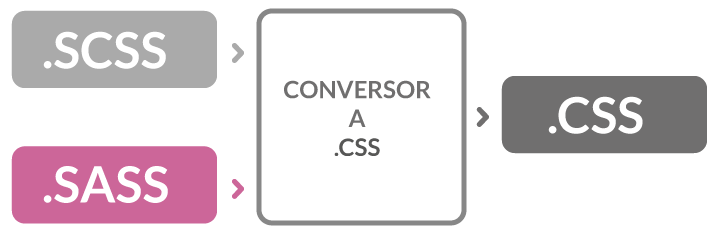

Sass (Syntactically Awesome Stylesheets) es un lenguaje de hoja de estilos inicialmente
diseñado por Hampton Catlin y desarrollado por Nathan Weizenbaum.
Después de sus versiones iniciales, Nathan Weizenbaum y Chris Eppstein han continuado extendiendo
Sass con SassScript, un lenguaje de script simple, usado en los ficheros Sass.
Introducción
Sass es un metalenguaje de Hojas de Estilo en Cascada (CSS).
Es un lenguaje de script que es traducido a CSS.
SassScript es el lenguaje de script en sí mismo. Sass consiste en dos sintaxis.
La sintaxis original, llamada indented syntax («sintaxis con sangrado») que usa una sintaxis similar al Html.
Éste usa la indentación para separar bloques de código y el carácter
nueva línea para separar reglas.

Fig 1. Esquema de conversión SASS.
La sintaxis más reciente, SCSS, usa el formato de bloques como CSS.
Éste usa llaves para denotar bloques de código y punto y coma (;)
para separar las líneas dentro de un bloque.
La sintaxis indentada y los ficheros SCSS tienen las extensiones .sass y .scss respectivamente.
Variables
Sass permite la definición de variables. Las variables comienzan con el signo de dólar ($).
La asignación de variables se hace con los dos puntos (:). SassScript permite 4 tipos de datos:
Números (incluyendo las unidades)
Strings (con comillas o sin ellas)
Colores (código, o nombre)
Booleanos
Las variables pueden ser resultados o argumentos de varias funciones disponibles.
Durante el proceso de traducción, los valores de las variables son insertados en
el documento CSS de salida.
Mixins
CSS no soporta mixins. Cualquier código duplicado debe ser repetido en cada lugar.
Un mixin es una sección de código que contiene código Sass.
Cada vez que se llama un mixin en el proceso de conversión el contenido del
mismo es insertado en el lugar de la llamada. Los mixin permiten una solución
limpia a las repeticiones de código, así como una forma fácil de alterar el mismo.
Estos frameworks usan Sass como base y su función básica
es resolver el acomodo de diferentes tamaños de pantalla para
lograr un diseño responsivo del sitio web.